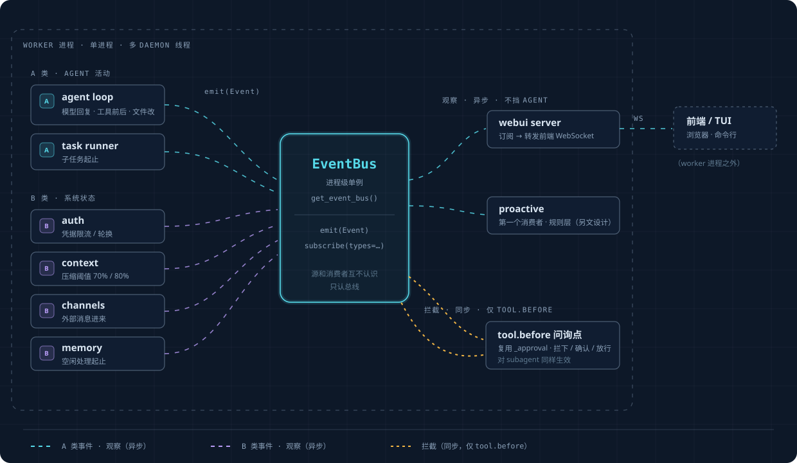

Event Layer#
A single unified event stream for the whole framework. proactive is just its first consumer.
Implementation status (2026-06-13): §1–§5 of this doc have all landed —
Event/make_event/emit_safe/subscribe(types=)/get_event_bus()live inopenprogram/agent/event_bus.py, the synchronous interception point is inopenprogram/agent/tool_gate.py, and the type-B bridges are inopenprogram/agent/event_bridges.py(auth) plus per-source taps. Both type-A and type-B events are being emitted. To observe: setOPENPROGRAM_EVENT_LOG=1, restart the worker, then read/tmp/openprogram-events.jsonl. Remaining: step 4 (switch webui over to being a subscriber), step 5 (proactive rules layer).
Why: the "something happened" signal in the framework is currently scattered across six unconnected mechanisms (the agent loop's
AgentEvent stream, auth's _emit, context's on_event, the channels WS broadcast, memory's periodic poll, and the
store's plain logging). To "do something at a certain moment", you first have to figure out which mechanism owns that moment and how to hook into it. This layer unifies them into
a single bus: sources emit into it, consumers subscribe from it. (The subscribe/_emit at auth/store.py:204
already gets events right; this layer generalizes that to the whole framework.)
1. The Event Model#
The three core fields (what happened + content + time) are fixed; correlation info goes into an open metadata pocket rather than hard-coded fields.
@dataclass(frozen=True)
class Event:
id: str # unique id
ts: float # when it happened
type: str # what kind of event, see §3
origin: str # who triggered it: user / agent / tool / system / proactive
payload: dict # the event's content (command, file path, which account got rate-limited, ...)
metadata: dict # open pocket: {"session":..., "turn":..., "lane":...}, fill in only when needed
Why session/turn/lane go into the pocket rather than being fixed fields: they are not intrinsic properties of an event, they are externally attached correlations, and for half the events (auth, channel) they have no meaning at all — making them fixed fields would force you to patch around them with "nullable". An open dict also lets you add new correlation dimensions later without changing the model. (Mature event systems all have this shape: a fixed core, with correlation going into labels / headers.)
turn is not something this layer models — there is no Turn object in the framework; it is simply the id of the assistant message, carried via a ContextVar (
_current_turn_id). When an agent event is emitted and this var has a value, it gets stuffed into metadata; when an auth/channel event is emitted the var is empty, so the pocket naturally has no turn.
2. Two Classes of Event Source#
| Type A: agent activity | Type B: system state | |
|---|---|---|
| When | While the agent is working | A global state change, possibly with no agent running |
| Examples | User message, model response, before/after a tool, file changed, end of a turn | Credential rate-limited, context about to overflow, external message arrives, skills changed |
| For proactive | The baseline | Often more valuable ("credential rate-limited" and "context about to overflow" are clear, actionable moments) |
It is easy to focus only on type A, but type B (auth/context/channels outside the agent loop) is often more important for proactivity. Both go into the same bus, and the metadata pocket naturally accommodates both — type A carries turn, type B does not, with no special case for either.
3. Event Types (first version)#
| Class | type | When | Source (actual wiring) | Status |
|---|---|---|---|---|
| A | user.prompt_submitted |
User sends a message | dispatcher (outside the persistence branch; emitted on both the webui and channel paths) | ✅ emitting |
| A | model.response_started/.completed |
Model starts / finishes its reply | agent_loop streaming start/done | ✅ emitting |
| A | tool.before |
Tool about to execute | agent_loop _execute_tool_calls (interceptable, see §5) |
✅ emitting + interceptable |
| A | tool.after |
Tool finished executing | agent_loop | ✅ emitting |
| A | file.changed |
File modified (payload carries path/op) | after a successful write in write/edit/apply_patch | ✅ emitting |
| A | turn.ended |
End of a turn | agent_loop (both the normal path and the error/abort paths) | ✅ emitting |
| A | subagent.started/.ended |
Subtask start/end | TaskRunner state funnel | ✅ emitting |
| B | credential.cooldown/.exhausted/.rotated |
Credential rate-limited / pool exhausted / rotated | event_bridges.py subscribes to AuthStore and translates |
✅ bridge installed |
| B | context.compaction_recommended/.compacted |
Context hits the threshold / has been compacted | context/engine.py source tap |
✅ emitting |
| B | channel.message_inbound |
External message arrives | channels/_conversation.py source tap |
✅ emitting |
| B | memory.ingest_started/.ended |
Idle-session wiki ingest start/end | memory/session_watcher.py source tap |
✅ emitting |
| B | skills.changed/plugins.update_available |
Skill changed / new plugin version available | webui watcher source tap | ✅ emitting (skills verified live) |
4. Placement: a process-level singleton bus#
All the relevant components (webui, agent loop, channels, memory, auth, task runner) run in the same worker
process (each as a daemon thread). So the bus is just a process-level singleton — reuse the idle agent/event_bus.py,
and add a get_event_bus() following the existing double-checked-locking precedent of get_store()/get_runner(). Every thread in the same process gets
the same instance and emits/subscribes directly, with no cross-process bridging needed.
class EventBus:
def emit(self, event: Event) -> None: ...
# broadcast to subscribers, fire-and-forget, does not block the caller
def subscribe(self, handler, *, types=None) -> unsubscribe_fn: ...
# subscribe by event type, receive only the few types you care about
(The existing EventBus subscribes by channel and passes arbitrary data; this changes it to subscribe by event type and pass a unified Event.)
5. Two Interaction Modes: Observe vs. Intercept#
Observe (default, async): emit it out, subscribers receive it asynchronously, and the event source does not wait. The vast majority of events take this path, and no matter how slow a subscriber is it does not slow the framework down.
Intercept (only tool.before, synchronous): just before a tool executes, this point must let downstream say "don't execute". A synchronous interception point is added before the
tool.execute() call in the tool's single entry point _execute_tool_calls. Key constraints: it must be fast (no calling the LLM);
when multiple parties weigh in, the strictest verdict wins; and it applies to subagents too (it sits outside the approval wrapper, so permission_mode=bypass cannot turn it off).
The landed API (openprogram/agent/tool_gate.py):
from openprogram.agent.tool_gate import register_tool_gate
# gate function: takes a tool.before event, returns None (allow) or a deny reason string
unregister = register_tool_gate(
lambda ev: "dangerous deletion" if "rm -rf" in str(ev.payload.get("args")) else None
)
The deny reason is returned to the model as an error tool result via the existing error path; deny reasons from multiple gates are merged; and a gate that
throws an exception is treated as allowing (fail-open). Generalizing the _approval.py "ask (pop a confirmation)" tier is left to a later step.
6. Architecture Diagram#

Interactive version (full visualization page with animated event flow):
event-layer.html
- The bus is the sole hub: sources and consumers don't know each other, they only know the bus — this is what "unified" means.
- webui and proactive are both just consumers, at the same level. proactive is not inside the event layer; it is an application on top of it — the event layer and proactive are fully decoupled, so you can build the event layer alone.
- Interception is a single separate synchronous line on the right, only for
tool.before; everything else is asynchronous observation.
7. Two Principles to Remember#
Not every call is an event — only moments that "some consumer wants to respond to" are. The table in §3 is hand-picked, not a dump of every action in the framework. Nobody wants to respond to the agent concatenating a list internally, so no event is emitted for it. An event stream becoming a dumping ground where everything gets thrown in is the most common way these systems rot.
Adding monitoring later is cheap, precisely because sources and consumers don't know each other — adding an event touches only the one emit site, with nothing else changed.
For the framework's own functions, one line of emit is enough; a whole class of actions (like all tools) can be covered at once by adding it at a common entry point; only
code from third parties that you can't touch needs a wrapper. Evolution is add-only, never change: adding an event type or adding a field to a payload is zero-risk (old subscribers
only read what they care about), while it is changing an old structure that affects old subscribers — which is also why payload/metadata use open dicts.
8. Landing It#
For the wiring points (file:line), the approach to bridging the six sources into the bus, and the step-by-step plan with verification, see the implementation plan. Order: first consolidate type A into the bus and verify it can emit a complete event sequence, then add file-change events and before-tool interception, then bridge in type-B system events, and finally add lane distinction for concurrency.